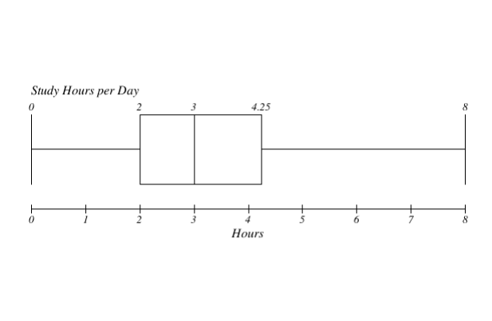
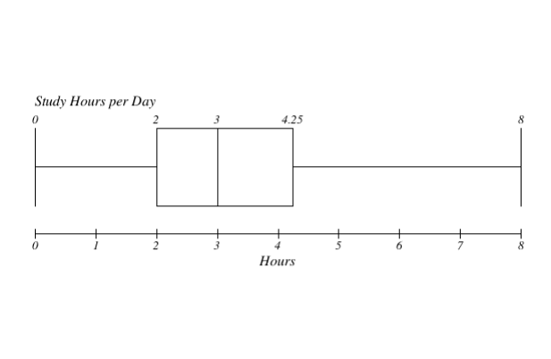

The pie chart and bar graph of the variable school shows the largest value as the most frequent response from our survey, which is Daniel R. Aguinaldo National High School, telling us that most of the students we surveyed study here, with a total number of 26. The six smallest values are the schools with the least frequent responses, indicating that we had 1 each of respondents that study from Catalunan Pequeno National High School, Davao City National High School, Ma-a National High School, Mary Mediatrix Academy Incorporated, Philippine Women’s College of Davao, and Sto. Nino National High School.
The graphs of this variable shows grade 8 being the highest and grade 10 being the lowest. The highest tells us the most frequent and the lowest tells us the least frequent. The order of frequency, from highest to lowest, of what the grade levels of our student respondents are grade 8 (43), grade 9 (11), grade 7 (7), and then grade 10 (3).
The interquartile range (IQR) of our data set, which is the difference between quartile 3 and quartile 1, is 3.25. When calculating the lower fence and upper fence, we get 84.87% and 97.88%, respectively. Since we have values outside of those fences, namely 84% by one respondent, 83% by two respondents, 80% by one respondent, and 98% by one respondent, we can consider them as outliers. In total, there are five (5) outliers in this data set. Looking at the boxplot and histogram, we can see that the shape of the distribution is skewed to the left. Among the mean and median, the median is the most appropriate center to use, because the shape of the distribution is skewed. At some times, the mean may cause misinterpretations, especially when there are extreme values. As for this case, since there are outliers, the median is the best to use.
 

The histogram and boxplot above shows the slight asymmetry of the shape of distribution of data, therefore it is positively skewed. For the IQR on the other hand, it tells us that the data falls within the concentrated range of 2.25, spanning from 2-4.25 hours, which indicates that the central part of the data set is quite consistent. In the topic of outliers, we have -1.375 hours as the lower bound and 7.125 hours as the upper bound, and if we observe our datasets, we don't have data points that go below -1.375, although we have ones that go beyond 7.125, which is the data point of 8 hours, which are 2 values on the data set. Therefore, we have 2 total outliers in this data. In the descriptives we can see that the mean is the central value of the data set, which also states that on the average the data points are estimated to be 3.11 units. For the median, it has the other half of the data set equal with the other side of the quartile. For the standard deviation, since it has a lower deviation, it suggests a moderate spread of values, not too widely dispersed from the mean.
S1kr3tn0clu3 brands by Myra Ganade. All Rights Reserved, 2023